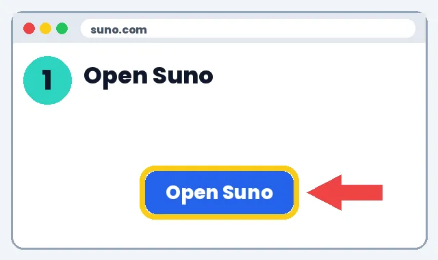
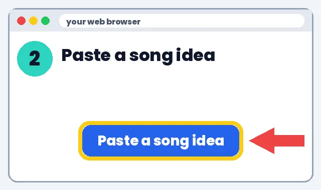
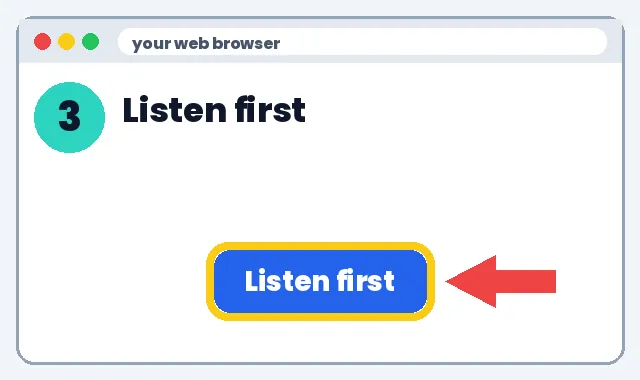
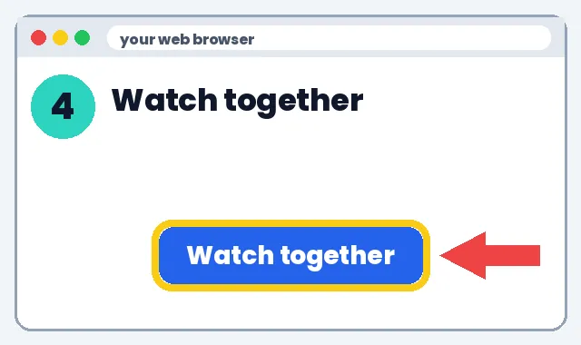
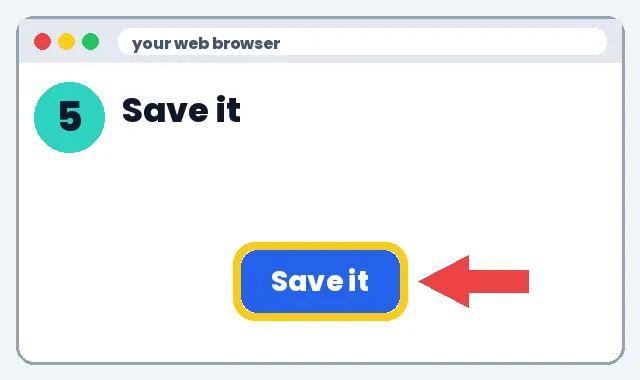

👪 For Parents
🎬 Watch It. Then Do It.
Short AI songs and videos can make home learning fun. You stay in charge.
1️⃣ What it can do
2️⃣ How to make it
👉 Show me the steps
Go to suno.com with your own grown-up account. Kids don't use it alone.

Click Create. Paste this. Change the [brackets].

Play it yourself before your child hears it. Check the words are right.

Play it with your child. Sing along. Stop and talk about it.

Download it so you can replay it without logging in.

3️⃣ What to do next
Pick one link below and try it this week. Start small: one tool, one lesson, 10 minutes.
Learn more
🛡️ Safety tip: Use your own adult account. Never type a child's or student's full name, school, address, grades or photos into an AI tool. Check each tool's age rule before anyone signs up.
🎨 What you can make
🛡️ Stay safe
📚 More home video ideas
No tech experience needed. We'll show you every click.
Learn more
What AI videos can do at home
1️⃣ What it can do
- Turn this week's spelling list into a song your child sings in the car.
- Make a bedtime story where your child picks the animal and the setting.
- Make a 1-minute review of a tricky homework topic.
2️⃣ How to make it
- Ask your child what topic is hard this week.
- Open gemini.google.com on your account and paste the prompt below.
- Read the words yourself first.
- Go to suno.com (your grown-up account), click Create, paste the words, click Create.
- Listen first, then play it together.
- Talk: “What did the song teach us?”
3️⃣ What to do next
Screen-time balance
1️⃣ What it can do
- Keeps videos a treat, not a babysitter.
2️⃣ How to make it
- Watch together, 5–10 minutes.
- Follow up with an offline activity: draw, act it out, or sing without the screen.
- Never upload your child's photo, name or voice to an AI tool.
3️⃣ What to do next
💰 Save money: discounts
- Khan Academy: Free lessons and practice
- Khan Academy Kids: Free learning app for ages 2-8
- PBS KIDS for Parents: Free tips and activities
- PBS KIDS: Free games and videos for young kids
- Libby (library app): Free e-books and audiobooks with a library card
See all deals for teachers & parents
Deals change, check the site. No affiliate links: we earn nothing from these.